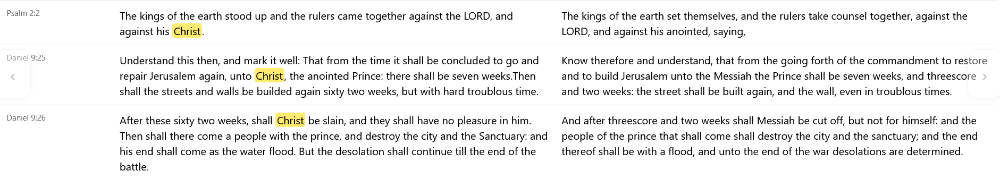

Jesus Christ is King of Kings!
Praise the Alpha and the Omega, my Saviour, Jesus Christ.
Here you will find the first ever English translation of the Word of God,
which is known as the Matthew Bible. The man who worked on this used the pseudonym
Thomas Matthew. His real name was John Rogers. The government at the time did not
want the Word of God translated into English, or any language that regular,
every day people could read. That is a common theme throughout history.
John Rogers was burned at the stake for this beautiful work he did, and I am
sure has received a martyr's crown in Heaven with Our Heavenly Father.
I have here his original text, in a readable, book-view style.
I also have the MSTC and MSTC, KJV, WEB side by side comparison.
I must note that the MSTC is NOT a faithful translation of Matthew's original Bible.
I do find it better than the KJV, but it does omit and change things,
just like every other modern English translation of the Bible does
(including the KJV, ESV, ASV, NASB, NIV, etc.) The best answer in seeking the Truth
is to ask God to lead you to it in Jesus Christ's name.
Hallelujah, I am a citizen of Heaven. A citizen of New Jerusalem.
Thank you Jesus Christ for redeeming me from the grave.
Father, I pray, in the name of Jesus Christ, that you share the truth of just how much your Word
has been messed with in all these translations. The Truth is eternal and does not change.
Thank you Jesus Christ almighty. 🙂✝️❤️

In reading the original 1537 Bible, I found that it contains the word "crucyfyenge" (crucifying) in Isaiah 53. Isaiah 53 is a prophecy about Jesus Christ. This is removed from the MSTC. Of course it is also removed from the KJV and all modern versions (WEB, NIV, ASV, ESV, etc) MSTC is helpful, but the best solution is to work through the original text yourself.

The word "Christ" appears three times in the Old Testament in the original English translation of the Word of God.

People of old knew the basic truth of where we live, and the true cosmology as ordained by our Heavenly Father.

This is the original text from 1537, spelled as "flatt erthe."

Seven shekels and ten silver pence is not the same as seventeen shekels, and since currency can change over the years, Jesus Christ was telling the truth when He spoke of Jeremy the prophet's prophecy. This is another thing the KJV changed.

I learned from an apocryphal work that the world was given 120 years by God to repent before the great flood. It was validating to see it here as well, in the original English translation. The KJV obfuscated the real meaning of this.